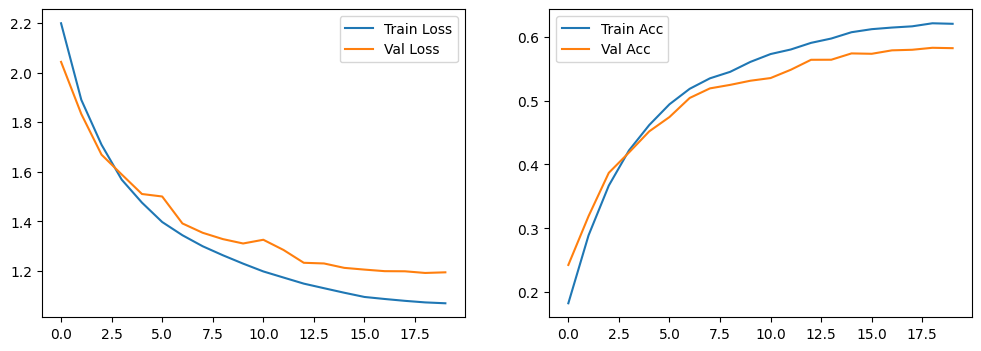
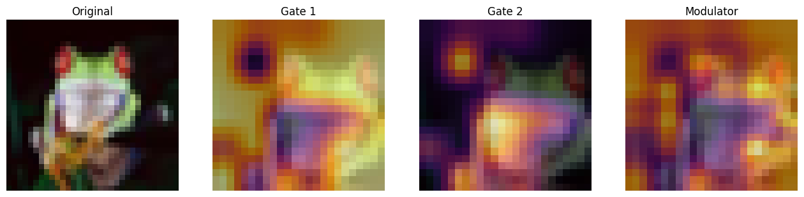
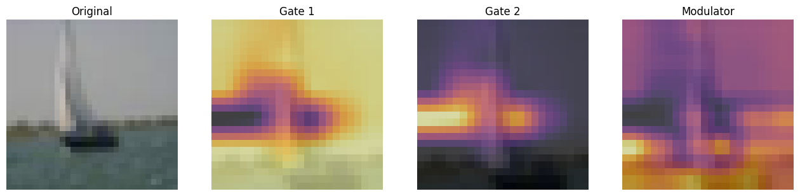
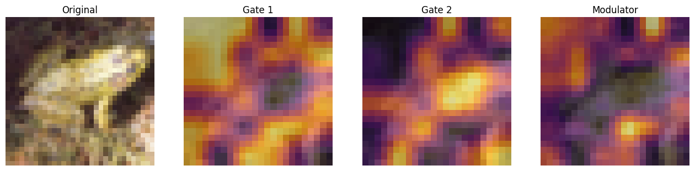
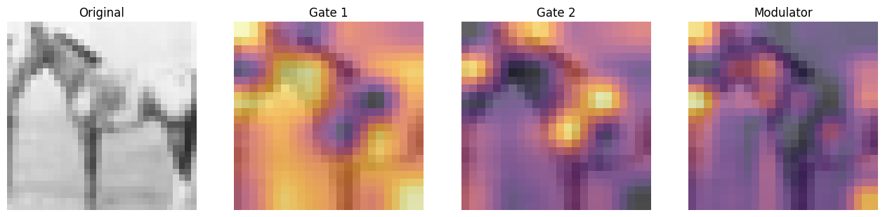
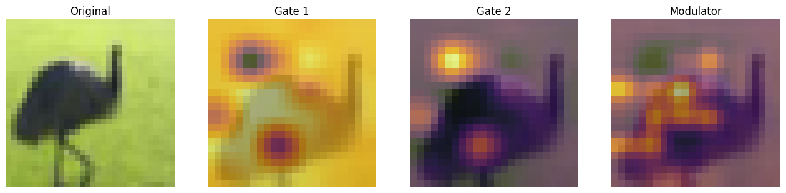

Focal Modulation: A replacement for Self-Attention
Author: Aritra Roy Gosthipaty, Ritwik Raha
Date created: 2023/01/25
Last modified: 2026/01/27
Description: Image classification with Focal Modulation Networks.

Introduction
This tutorial aims to provide a comprehensive guide to the implementation of Focal Modulation Networks, as presented in Yang et al..
This tutorial will provide a formal, minimalistic approach to implementing Focal Modulation Networks and explore its potential applications in the field of Deep Learning.
Problem statement
The Transformer architecture (Vaswani et al.), which has become the de facto standard in most Natural Language Processing tasks, has also been applied to the field of computer vision, e.g. Vision Transformers (Dosovitskiy et al.).
In Transformers, the self-attention (SA) is arguably the key to its success which enables input-dependent global interactions, in contrast to convolution operation which constraints interactions in a local region with a shared kernel.
The Attention module is mathematically written as shown in Equation 1.
 |
|---|
| Equation 1: The mathematical equation of attention (Source: Aritra and Ritwik) |
Where:
Qis the queryKis the keyVis the valued_kis the dimension of the key
With self-attention, the query, key, and value are all sourced from the input sequence. Let us rewrite the attention equation for self-attention as shown in Equation 2.
 |
|---|
| Equation 2: The mathematical equation of self-attention (Source: Aritra and Ritwik) |
Upon looking at the equation of self-attention, we see that it is a quadratic equation. Therefore, as the number of tokens increase, so does the computation time (cost too). To mitigate this problem and make Transformers more interpretable, Yang et al. have tried to replace the Self-Attention module with better components.
The Solution
Yang et al. introduce the Focal Modulation layer to serve as a seamless replacement for the Self-Attention Layer. The layer boasts high interpretability, making it a valuable tool for Deep Learning practitioners.
In this tutorial, we will delve into the practical application of this layer by training the entire model on the CIFAR-10 dataset and visually interpreting the layer's performance.
Note: We try to align our implementation with the official implementation.
Setup and Imports
Keras 3 allows this model to run on JAX, PyTorch, or TensorFlow. We use keras.ops for all mathematical operations to ensure the code remains backend-agnostic.
import os
# Set backend before importing keras
os.environ["KERAS_BACKEND"] = "tensorflow" # or "torch" or "jax"
# Suppress TensorFlow C++ logging (XLA messages)
os.environ["TF_CPP_MIN_LOG_LEVEL"] = "3"
import numpy as np
import keras
from keras import layers
from keras import ops
from matplotlib import pyplot as plt
from random import randint
import warnings
import logging
# Suppress warnings
warnings.filterwarnings("ignore", category=UserWarning)
warnings.filterwarnings("ignore", message=".*build.*method.*")
warnings.filterwarnings("ignore", message=".*tf.function.*retracing.*")
# Suppress TensorFlow logging
logging.getLogger("tensorflow").setLevel(logging.ERROR)
# Set seed for reproducibility using Keras 3 utility.
keras.utils.set_random_seed(42)
Global Configuration
We do not have any strong rationale behind choosing these hyperparameters. Please feel free to change the configuration and train the model.
# --- GLOBAL CONFIGURATION ---
TRAIN_SLICE = 40000
BATCH_SIZE = 128 # 1024
INPUT_SHAPE = (32, 32, 3)
IMAGE_SIZE = 48
NUM_CLASSES = 10
LEARNING_RATE = 1e-4
WEIGHT_DECAY = 1e-4
EPOCHS = 20
Data Loading with PyDataset
Keras 3 introduces PyDataset as a standardized way to handle data. It works identically across all backends and avoids the "Symbolic Tensor" issues often found when using tf.data with JAX or PyTorch.
(x_train, y_train), (x_test, y_test) = keras.datasets.cifar10.load_data()
(x_train, y_train), (x_val, y_val) = (
(x_train[:TRAIN_SLICE], y_train[:TRAIN_SLICE]),
(x_train[TRAIN_SLICE:], y_train[TRAIN_SLICE:]),
)
class FocalDataset(keras.utils.PyDataset):
def __init__(self, x_data, y_data, batch_size, shuffle=False, **kwargs):
super().__init__(**kwargs)
self.x_data = x_data
self.y_data = y_data
self.batch_size = batch_size
self.shuffle = shuffle
self.indices = np.arange(len(x_data))
if self.shuffle:
np.random.shuffle(self.indices)
def __len__(self):
return int(np.ceil(len(self.x_data) / self.batch_size))
def __getitem__(self, idx):
start = idx * self.batch_size
end = min((idx + 1) * self.batch_size, len(self.x_data))
batch_indices = self.indices[start:end]
x_batch = self.x_data[batch_indices]
y_batch = self.y_data[batch_indices]
# Convert to backend-native tensors
x_batch = ops.convert_to_tensor(x_batch, dtype="float32")
y_batch = ops.convert_to_tensor(y_batch, dtype="int32")
return x_batch, y_batch
def on_epoch_end(self):
if self.shuffle:
np.random.shuffle(self.indices)
train_ds = FocalDataset(x_train, y_train, batch_size=BATCH_SIZE, shuffle=True)
val_ds = FocalDataset(x_val, y_val, batch_size=BATCH_SIZE, shuffle=False)
test_ds = FocalDataset(x_test, y_test, batch_size=BATCH_SIZE, shuffle=False)
Architecture
We pause here to take a quick look at the Architecture of the Focal Modulation Network. Figure 1 shows how every individual layer is compiled into a single model. This gives us a bird's eye view of the entire architecture.
 |
|---|
| Figure 1: A diagram of the Focal Modulation model (Source: Aritra and Ritwik) |
We dive deep into each of these layers in the following sections. This is the order we will follow:
- Patch Embedding Layer
- Focal Modulation Block
- Multi-Layer Perceptron
- Focal Modulation Layer
- Hierarchical Contextualization
- Gated Aggregation
- Building Focal Modulation Block
- Building the Basic Layer
To better understand the architecture in a format we are well versed in, let us see how the Focal Modulation Network would look when drawn like a Transformer architecture.
Figure 2 shows the encoder layer of a traditional Transformer architecture where Self Attention is replaced with the Focal Modulation layer.
The blue blocks represent the Focal Modulation block. A stack of these blocks builds a single Basic Layer. The green blocks represent the Focal Modulation layer.
 |
|---|
| Figure 2: The Entire Architecture (Source: Aritra and Ritwik) |
Patch Embedding Layer
The patch embedding layer is used to patchify the input images and project them into a latent space. This layer is also used as the down-sampling layer in the architecture.
class PatchEmbed(layers.Layer):
"""Image patch embedding layer, also acts as the down-sampling layer.
Args:
image_size (Tuple[int]): Input image resolution.
patch_size (Tuple[int]): Patch spatial resolution.
embed_dim (int): Embedding dimension.
"""
def __init__(
self, image_size=(224, 224), patch_size=(4, 4), embed_dim=96, **kwargs
):
super().__init__(**kwargs)
self.patch_resolution = [
image_size[0] // patch_size[0],
image_size[1] // patch_size[1],
]
self.proj = layers.Conv2D(
filters=embed_dim, kernel_size=patch_size, strides=patch_size
)
self.flatten = layers.Reshape(target_shape=(-1, embed_dim))
self.norm = layers.LayerNormalization(epsilon=1e-7)
def call(self, x):
"""Patchifies the image and converts into tokens.
Args:
x: Tensor of shape (B, H, W, C)
Returns:
A tuple of the processed tensor, height of the projected
feature map, width of the projected feature map, number
of channels of the projected feature map.
"""
x = self.proj(x)
shape = ops.shape(x)
height, width, channels = shape[1], shape[2], shape[3]
x = self.norm(self.flatten(x))
return x, height, width, channels
Focal Modulation block
A Focal Modulation block can be considered as a single Transformer Block with the Self Attention (SA) module being replaced with Focal Modulation module, as we saw in Figure 2.
Let us recall how a focal modulation block is supposed to look like with the aid of the Figure 3.
 |
|---|
| Figure 3: The isolated view of the Focal Modulation Block (Source: Aritra and Ritwik) |
The Focal Modulation Block consists of: - Multilayer Perceptron - Focal Modulation layer
Multilayer Perceptron
def MLP(in_features, hidden_features=None, out_features=None, mlp_drop_rate=0.0):
hidden_features = hidden_features or in_features
out_features = out_features or in_features
return keras.Sequential(
[
layers.Dense(units=hidden_features, activation="gelu"),
layers.Dense(units=out_features),
layers.Dropout(rate=mlp_drop_rate),
]
)
Focal Modulation layer
In a typical Transformer architecture, for each visual token (query) x_i in R^C in
an input feature map X in R^{HxWxC} a generic encoding process produces a feature
representation y_i in R^C.
The encoding process consists of interaction (with its surroundings for e.g. a dot product), and aggregation (over the contexts for e.g weighted mean).
We will talk about two types of encoding here: - Interaction and then Aggregation in Self-Attention - Aggregation and then Interaction in Focal Modulation
Self-Attention
 |
|---|
| Figure 4: Self-Attention module. (Source: Aritra and Ritwik) |
 |
|---|
| Equation 3: Aggregation and Interaction in Self-Attention(Surce: Aritra and Ritwik) |
As shown in Figure 4 the query and the key interact (in the interaction step) with each other to output the attention scores. The weighted aggregation of the value comes next, known as the aggregation step.
Focal Modulation
 |
|---|
| Figure 5: Focal Modulation module. (Source: Aritra and Ritwik) |
 |
|---|
| Equation 4: Aggregation and Interaction in Focal Modulation (Source: Aritra and Ritwik) |
Figure 5 depicts the Focal Modulation layer. q() is the query projection
function. It is a linear layer that projects the query into a latent space. m () is
the context aggregation function. Unlike self-attention, the
aggregation step takes place in focal modulation before the interaction step.
While q() is pretty straightforward to understand, the context aggregation function
m() is more complex. Therefore, this section will focus on m().
 |
|---|
Figure 6: Context Aggregation function m(). (Source: Aritra and Ritwik) |
The context aggregation function m() consists of two parts as shown in Figure 6:
- Hierarchical Contextualization
- Gated Aggregation
Hierarchical Contextualization
 |
|---|
| Figure 7: Hierarchical Contextualization (Source: Aritra and Ritwik) |
In Figure 7, we see that the input is first projected linearly. This linear projection
produces Z^0. Where Z^0 can be expressed as follows:
 |
|---|
Equation 5: Linear projection of Z^0 (Source: Aritra and Ritwik) |
Z^0 is then passed on to a series of Depth-Wise (DWConv) Conv and
GeLU layers. The
authors term each block of DWConv and GeLU as levels denoted by l. In Figure 6 we
have two levels. Mathematically this is represented as:
 |
|---|
| Equation 6: Levels of the modulation layer (Source: Aritra and Ritwik) |
where l in {1, ... , L}
The final feature map goes through a Global Average Pooling Layer. This can be expressed as follows:
 |
|---|
| Equation 7: Average Pooling of the final feature (Source: Aritra and Ritwik) |
Gated Aggregation
 |
|---|
| Figure 8: Gated Aggregation (Source: Aritra and Ritwik) |
Now that we have L+1 intermediate feature maps by virtue of the Hierarchical
Contextualization step, we need a gating mechanism that lets some features pass and
prohibits others. This can be implemented with the attention module.
Later in the tutorial, we will visualize these gates to better understand their
usefulness.
First, we build the weights for aggregation. Here we apply a linear layer on the input
feature map that projects it into L+1 dimensions.
 |
|---|
| Eqation 8: Gates (Source: Aritra and Ritwik) |
Next we perform the weighted aggregation over the contexts.
 |
|---|
| Eqation 9: Final feature map (Source: Aritra and Ritwik) |
To enable communication across different channels, we use another linear layer h()
to obtain the modulator
 |
|---|
| Eqation 10: Modulator (Source: Aritra and Ritwik) |
To sum up the Focal Modulation layer we have:
 |
|---|
| Eqation 11: Focal Modulation Layer (Source: Aritra and Ritwik) |
class FocalModulationLayer(layers.Layer):
"""The Focal Modulation layer includes query projection & context aggregation.
Args:
dim (int): Projection dimension.
focal_window (int): Window size for focal modulation.
focal_level (int): The current focal level.
focal_factor (int): Factor of focal modulation.
proj_drop_rate (float): Rate of dropout.
"""
def __init__(
self,
dim,
focal_window,
focal_level,
focal_factor=2,
proj_drop_rate=0.0,
**kwargs,
):
super().__init__(**kwargs)
self.dim, self.focal_level = dim, focal_level
self.initial_proj = layers.Dense(units=(2 * dim) + (focal_level + 1))
self.focal_layers = [
keras.Sequential(
[
layers.ZeroPadding2D(
padding=((focal_factor * i + focal_window) // 2)
),
layers.Conv2D(
filters=dim,
kernel_size=(focal_factor * i + focal_window),
activation="gelu",
groups=dim,
use_bias=False,
),
]
)
for i in range(focal_level)
]
self.gap = layers.GlobalAveragePooling2D(keepdims=True)
self.mod_proj = layers.Conv2D(filters=dim, kernel_size=1)
self.proj = layers.Dense(units=dim)
self.proj_drop = layers.Dropout(proj_drop_rate)
def call(self, x, training=None):
"""Forward pass of the layer.
Args:
x: Tensor of shape (B, H, W, C)
"""
x_proj = self.initial_proj(x)
query, context, gates = ops.split(x_proj, [self.dim, 2 * self.dim], axis=-1)
# Apply Softmax for numerical stability
gates = ops.softmax(gates, axis=-1)
self.gates = gates
context = self.focal_layers[0](context)
context_all = context * gates[..., 0:1]
for i in range(1, self.focal_level):
context = self.focal_layers[i](context)
context_all = context_all + (context * gates[..., i : i + 1])
context_global = ops.gelu(self.gap(context))
context_all = context_all + (context_global * gates[..., self.focal_level :])
self.modulator = self.mod_proj(context_all)
x_out = query * self.modulator
return self.proj_drop(self.proj(x_out), training=training)
The Focal Modulation block
Finally, we have all the components we need to build the Focal Modulation block. Here we take the MLP and Focal Modulation layer together and build the Focal Modulation block.
class FocalModulationBlock(layers.Layer):
"""Combine FFN and Focal Modulation Layer.
Args:
dim (int): Number of input channels.
mlp_ratio (float): Ratio of mlp hidden dim to embedding dim.
drop (float): Dropout rate.
focal_level (int): Number of focal levels.
focal_window (int): Focal window size at first focal level
"""
def __init__(
self, dim, mlp_ratio=4.0, drop=0.0, focal_level=1, focal_window=3, **kwargs
):
super().__init__(**kwargs)
self.norm1 = layers.LayerNormalization(epsilon=1e-5)
self.modulation = FocalModulationLayer(
dim, focal_window, focal_level, proj_drop_rate=drop
)
self.norm2 = layers.LayerNormalization(epsilon=1e-5)
self.mlp = MLP(dim, int(dim * mlp_ratio), mlp_drop_rate=drop)
def call(self, x, height=None, width=None, channels=None, training=None):
"""Processes the input tensor through the focal modulation block.
Args:
x : Inputs of the shape (B, L, C)
height (int): The height of the feature map
width (int): The width of the feature map
channels (int): The number of channels of the feature map
Returns:
The processed tensor.
"""
res = x
x = ops.reshape(x, (-1, height, width, channels))
x = self.modulation(x, training=training)
x = ops.reshape(x, (-1, height * width, channels))
x = res + x
return x + self.mlp(self.norm2(x), training=training)
The Basic Layer
The basic layer consists of a collection of Focal Modulation blocks. This is illustrated in Figure 9.
 |
|---|
| Figure 9: Basic Layer, a collection of focal modulation blocks. (Source: Aritra and Ritwik) |
Notice how in Fig. 9 there are more than one focal modulation blocks denoted by Nx.
This shows how the Basic Layer is a collection of Focal Modulation blocks.
class BasicLayer(layers.Layer):
"""Collection of Focal Modulation Blocks.
Args:
dim (int): Dimensions of the model.
out_dim (int): Dimension used by the Patch Embedding Layer.
input_res (Tuple[int]): Input image resolution.
depth (int): The number of Focal Modulation Blocks.
mlp_ratio (float): Ratio of mlp hidden dim to embedding dim.
drop (float): Dropout rate.
downsample (keras.layers.Layer): Downsampling layer at the end of the layer.
focal_level (int): The current focal level.
focal_window (int): Focal window used.
"""
def __init__(
self,
dim,
out_dim,
input_res,
depth,
mlp_ratio=4.0,
drop=0.0,
downsample=None,
focal_level=1,
focal_window=1,
**kwargs,
):
super().__init__(**kwargs)
self.blocks = [
FocalModulationBlock(dim, mlp_ratio, drop, focal_level, focal_window)
for _ in range(depth)
]
self.downsample = (
downsample(image_size=input_res, patch_size=(2, 2), embed_dim=out_dim)
if downsample
else None
)
def call(self, x, height=None, width=None, channels=None, training=None):
"""Forward pass of the layer.
Args:
x : Tensor of shape (B, L, C)
height (int): Height of feature map
width (int): Width of feature map
channels (int): Embed Dim of feature map
Returns:
A tuple of the processed tensor, changed height, width, and
dim of the tensor.
"""
for block in self.blocks:
x = block(
x, height=height, width=width, channels=channels, training=training
)
if self.downsample:
x = ops.reshape(x, (-1, height, width, channels))
x, height, width, channels = self.downsample(x)
return x, height, width, channels
The Focal Modulation Network model
This is the model that ties everything together. It consists of a collection of Basic Layers with a classification head. For a recap of how this is structured refer to Figure 1.
class FocalModulationNetwork(keras.Model):
"""The Focal Modulation Network.
Parameters:
image_size (Tuple[int]): Spatial size of images used.
patch_size (Tuple[int]): Patch size of each patch.
num_classes (int): Number of classes used for classification.
embed_dim (int): Patch embedding dimension.
depths (List[int]): Depth of each Focal Transformer block.
"""
def __init__(
self,
image_size=(48, 48),
patch_size=(4, 4),
num_classes=10,
embed_dim=64,
depths=[2, 3, 2],
**kwargs,
):
super().__init__(**kwargs)
# Preprocessing integrated in model for backend-agnostic behavior
self.rescaling = layers.Rescaling(1.0 / 255.0)
self.resizing_larger = layers.Resizing(image_size[0] + 10, image_size[1] + 10)
self.random_crop = layers.RandomCrop(image_size[0], image_size[1])
self.resizing_target = layers.Resizing(image_size[0], image_size[1])
self.random_flip = layers.RandomFlip("horizontal")
self.patch_embed = PatchEmbed(image_size, patch_size, embed_dim)
self.basic_layers = []
for i in range(len(depths)):
d = embed_dim * (2**i)
self.basic_layers.append(
BasicLayer(
dim=d,
out_dim=d * 2 if i < len(depths) - 1 else None,
input_res=(image_size[0] // (2**i), image_size[1] // (2**i)),
depth=depths[i],
downsample=PatchEmbed if i < len(depths) - 1 else None,
)
)
self.norm = layers.LayerNormalization(epsilon=1e-7)
self.avgpool = layers.GlobalAveragePooling1D()
self.head = layers.Dense(num_classes, activation="softmax")
def call(self, x, training=None):
"""Forward pass of the layer.
Args:
x: Tensor of shape (B, H, W, C)
Returns:
The logits.
"""
x = self.rescaling(x)
if training:
x = self.resizing_larger(x)
x = self.random_crop(x)
x = self.random_flip(x)
else:
x = self.resizing_target(x)
x, h, w, c = self.patch_embed(x)
for layer in self.basic_layers:
x, h, w, c = layer(x, height=h, width=w, channels=c, training=training)
return self.head(self.avgpool(self.norm(x)))
Train the model
Now with all the components in place and the architecture actually built, we are ready to put it to good use.
In this section, we train our Focal Modulation model on the CIFAR-10 dataset.
Visualization Callback
A key feature of the Focal Modulation Network is explicit input-dependency. This means the modulator is calculated by looking at the local features around the target location, so it depends on the input. In very simple terms, this makes interpretation easy. We can simply lay down the gating values and the original image, next to each other to see how the gating mechanism works.
The authors of the paper visualize the gates and the modulator in order to focus on the interpretability of the Focal Modulation layer. Below is a visualization callback that shows the gates and modulator of a specific layer in the model while the model trains.
We will notice later that as the model trains, the visualizations get better.
The gates appear to selectively permit certain aspects of the input image to pass through, while gently disregarding others, ultimately leading to improved classification accuracy.
def display_grid(test_images, gates, modulator):
"""Displays the image with the gates and modulator overlayed.
Args:
test_images: A batch of test images.
gates: The gates of the Focal Modualtion Layer.
modulator: The modulator of the Focal Modulation Layer.
"""
test_images_np = ops.convert_to_numpy(test_images) / 255.0
gates_np = ops.convert_to_numpy(gates)
mod_np = ops.convert_to_numpy(ops.norm(modulator, axis=-1))
num_gates = gates_np.shape[-1]
idx = randint(0, test_images_np.shape[0] - 1)
fig, ax = plt.subplots(1, num_gates + 2, figsize=((num_gates + 2) * 4, 4))
ax[0].imshow(test_images_np[idx])
ax[0].set_title("Original")
ax[0].axis("off")
for i in range(num_gates):
ax[i + 1].imshow(test_images_np[idx])
ax[i + 1].imshow(gates_np[idx, ..., i], cmap="inferno", alpha=0.6)
ax[i + 1].set_title(f"Gate {i+1}")
ax[i + 1].axis("off")
ax[-1].imshow(test_images_np[idx])
ax[-1].imshow(mod_np[idx], cmap="inferno", alpha=0.6)
ax[-1].set_title("Modulator")
ax[-1].axis("off")
plt.show()
plt.close()
Learning Rate scheduler
class WarmUpCosine(keras.optimizers.schedules.LearningRateSchedule):
def __init__(self, lr_base, total_steps, warmup_steps):
super().__init__()
self.lr_base, self.total_steps, self.warmup_steps = (
lr_base,
total_steps,
warmup_steps,
)
def __call__(self, step):
step = ops.cast(step, "float32")
cos_lr = (
0.5
* self.lr_base
* (
1
+ ops.cos(
np.pi
* (step - self.warmup_steps)
/ (self.total_steps - self.warmup_steps)
)
)
)
warmup_lr = (self.lr_base / self.warmup_steps) * step
return ops.where(
step < self.warmup_steps,
warmup_lr,
ops.where(step > self.total_steps, 0.0, cos_lr),
)
total_steps = (len(x_train) // BATCH_SIZE) * EPOCHS
scheduled_lrs = WarmUpCosine(LEARNING_RATE, total_steps, int(total_steps * 0.15))
Initialize, compile and train the model
model = FocalModulationNetwork(image_size=(IMAGE_SIZE, IMAGE_SIZE))
model.compile(
optimizer=keras.optimizers.AdamW(
learning_rate=scheduled_lrs, weight_decay=WEIGHT_DECAY, clipnorm=1.0
),
loss="sparse_categorical_crossentropy",
metrics=["accuracy"],
)
history = model.fit(
train_ds,
validation_data=val_ds,
epochs=EPOCHS,
)
Epoch 1/20
WARNING: All log messages before absl::InitializeLog() is called are written to STDERR
I0000 00:00:1777027663.829105 8722813 service.cc:152] XLA service 0x35911d0b0 initialized for platform Host (this does not guarantee that XLA will be used). Devices:
I0000 00:00:1777027663.829121 8722813 service.cc:160] StreamExecutor device (0): Host, Default Version
I0000 00:00:1777027663.878984 8722813 device_compiler.h:188] Compiled cluster using XLA! This line is logged at most once for the lifetime of the process.
313/313 ━━━━━━━━━━━━━━━━━━━━ 309s 954ms/step - accuracy: 0.1826 - loss: 2.1990 - val_accuracy: 0.2426 - val_loss: 2.0434
Epoch 2/20
313/313 ━━━━━━━━━━━━━━━━━━━━ 309s 986ms/step - accuracy: 0.2891 - loss: 1.8906 - val_accuracy: 0.3191 - val_loss: 1.8333
Epoch 3/20
313/313 ━━━━━━━━━━━━━━━━━━━━ 308s 983ms/step - accuracy: 0.3669 - loss: 1.7095 - val_accuracy: 0.3869 - val_loss: 1.6693
Epoch 4/20
313/313 ━━━━━━━━━━━━━━━━━━━━ 310s 989ms/step - accuracy: 0.4221 - loss: 1.5685 - val_accuracy: 0.4188 - val_loss: 1.5894
Epoch 5/20
313/313 ━━━━━━━━━━━━━━━━━━━━ 301s 960ms/step - accuracy: 0.4618 - loss: 1.4759 - val_accuracy: 0.4519 - val_loss: 1.5107
Epoch 6/20
313/313 ━━━━━━━━━━━━━━━━━━━━ 311s 993ms/step - accuracy: 0.4943 - loss: 1.3977 - val_accuracy: 0.4743 - val_loss: 1.5007
Epoch 7/20
313/313 ━━━━━━━━━━━━━━━━━━━━ 305s 973ms/step - accuracy: 0.5185 - loss: 1.3445 - val_accuracy: 0.5042 - val_loss: 1.3920
Epoch 8/20
313/313 ━━━━━━━━━━━━━━━━━━━━ 302s 966ms/step - accuracy: 0.5350 - loss: 1.3001 - val_accuracy: 0.5192 - val_loss: 1.3544
Epoch 9/20
313/313 ━━━━━━━━━━━━━━━━━━━━ 302s 965ms/step - accuracy: 0.5451 - loss: 1.2637 - val_accuracy: 0.5247 - val_loss: 1.3289
Epoch 10/20
313/313 ━━━━━━━━━━━━━━━━━━━━ 305s 974ms/step - accuracy: 0.5607 - loss: 1.2300 - val_accuracy: 0.5312 - val_loss: 1.3112
Epoch 11/20
313/313 ━━━━━━━━━━━━━━━━━━━━ 298s 953ms/step - accuracy: 0.5730 - loss: 1.1985 - val_accuracy: 0.5354 - val_loss: 1.3262
Epoch 12/20
313/313 ━━━━━━━━━━━━━━━━━━━━ 300s 959ms/step - accuracy: 0.5802 - loss: 1.1739 - val_accuracy: 0.5484 - val_loss: 1.2850
Epoch 13/20
313/313 ━━━━━━━━━━━━━━━━━━━━ 303s 966ms/step - accuracy: 0.5905 - loss: 1.1494 - val_accuracy: 0.5640 - val_loss: 1.2334
Epoch 14/20
313/313 ━━━━━━━━━━━━━━━━━━━━ 305s 973ms/step - accuracy: 0.5973 - loss: 1.1309 - val_accuracy: 0.5641 - val_loss: 1.2307
Epoch 15/20
313/313 ━━━━━━━━━━━━━━━━━━━━ 298s 952ms/step - accuracy: 0.6072 - loss: 1.1127 - val_accuracy: 0.5740 - val_loss: 1.2129
Epoch 16/20
313/313 ━━━━━━━━━━━━━━━━━━━━ 300s 957ms/step - accuracy: 0.6120 - loss: 1.0956 - val_accuracy: 0.5734 - val_loss: 1.2059
Epoch 17/20
313/313 ━━━━━━━━━━━━━━━━━━━━ 301s 961ms/step - accuracy: 0.6145 - loss: 1.0874 - val_accuracy: 0.5788 - val_loss: 1.1996
Epoch 18/20
313/313 ━━━━━━━━━━━━━━━━━━━━ 304s 970ms/step - accuracy: 0.6164 - loss: 1.0800 - val_accuracy: 0.5797 - val_loss: 1.1991
Epoch 19/20
313/313 ━━━━━━━━━━━━━━━━━━━━ 299s 956ms/step - accuracy: 0.6212 - loss: 1.0737 - val_accuracy: 0.5828 - val_loss: 1.1924
Epoch 20/20
313/313 ━━━━━━━━━━━━━━━━━━━━ 298s 954ms/step - accuracy: 0.6204 - loss: 1.0702 - val_accuracy: 0.5822 - val_loss: 1.1950
Plot loss and accuracy
plt.figure(figsize=(12, 4))
plt.subplot(1, 2, 1)
plt.plot(history.history["loss"], label="Train Loss")
plt.plot(history.history["val_loss"], label="Val Loss")
plt.legend()
plt.subplot(1, 2, 2)
plt.plot(history.history["accuracy"], label="Train Acc")
plt.plot(history.history["val_accuracy"], label="Val Acc")
plt.legend()
plt.show()

Test visualizations
Let's test our model on some test images and see how the gates look like.
test_images, test_labels = next(iter(test_ds))
_ = model(test_images, training=False)
target_layer = model.basic_layers[1].blocks[-1].modulation
gates = target_layer.gates
modulator = target_layer.modulator
upsampler = layers.UpSampling2D(size=(4, 4), interpolation="bilinear")
gates_upsampled = upsampler(gates)
modulator_upsampled = upsampler(modulator)
for row in range(5):
display_grid(
test_images=test_images,
gates=gates_upsampled,
modulator=modulator_upsampled,
)





Conclusion
The proposed architecture, the Focal Modulation Network architecture is a mechanism that allows different parts of an image to interact with each other in a way that depends on the image itself. It works by first gathering different levels of context information around each part of the image (the "query token"), then using a gate to decide which context information is most relevant, and finally combining the chosen information in a simple but effective way.
This is meant as a replacement of Self-Attention mechanism from the Transformer architecture. The key feature that makes this research notable is not the conception of attention-less networks, but rather the introduction of a equally powerful architecture that is interpretable.
The authors also mention that they created a series of Focal Modulation Networks (FocalNets) that significantly outperform Self-Attention counterparts and with a fraction of parameters and pretraining data.
The FocalNets architecture has the potential to deliver impressive results and offers a simple implementation. Its promising performance and ease of use make it an attractive alternative to Self-Attention for researchers to explore in their own projects. It could potentially become widely adopted by the Deep Learning community in the near future.
Acknowledgement
We would like to thank PyImageSearch for providing with a Colab Pro account, JarvisLabs.ai for GPU credits, and also Microsoft Research for providing an official implementation of their paper. We would also like to extend our gratitude to the first author of the paper Jianwei Yang who reviewed this tutorial extensively.